04
总平面
MASTER PLAN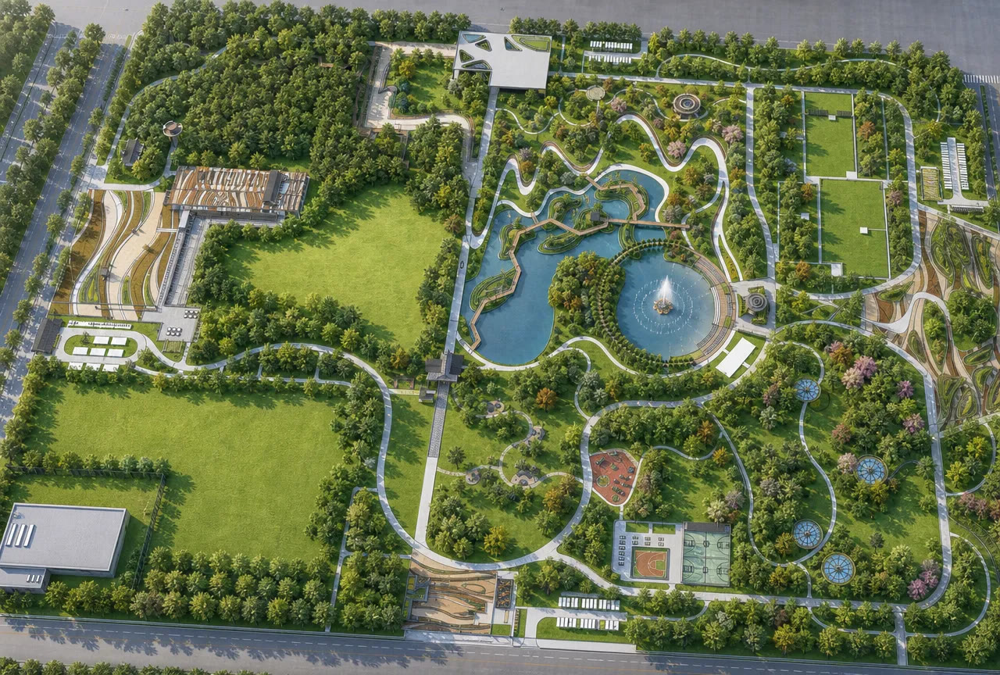
总平面鸟瞰
AERIAL VIEW中央泉湖与金莲雕塑构成全园焦点，环形剧场、木构廊架、湿地栈道与运动场地由蜿蜒的园路串联，周边密林围合出安静的城市绿心。
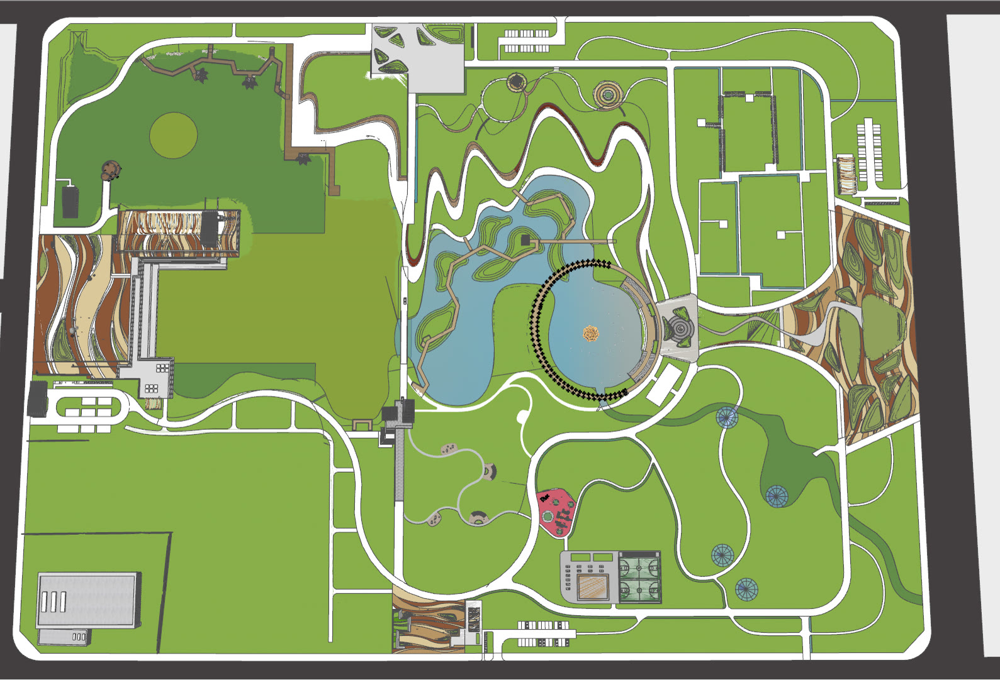
总平面图
PLAN A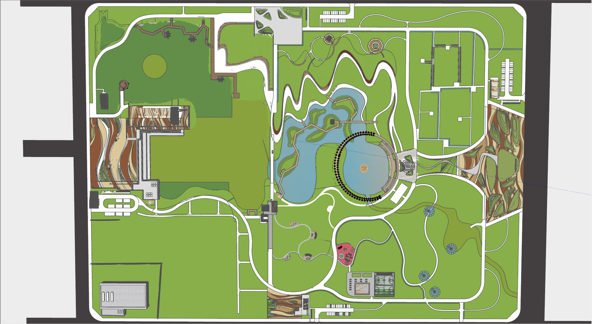
总平面图 · 深化
PLAN B
JINAN WEST CENTRAL PARK · LANDSCAPE DESIGN
泉脉汇于西站枢纽——立足济南西站客流、地铁 TOD 与中央公园中轴布局，面向过境游客与市民双重人群，让"出站即入园"，成为泉城面向世界的门户客厅。
SCROLL设计以"泉汇西枢"为主题：横向迎宾、纵向脉连——以东西主路为迎宾中轴，从泉源广场出发，经核心泉溪水景抵达城市休闲广场；提取趵突泉、明府城泉渠肌理融入铺装与景观小品，全园散布微型泉涌旱景，让百年泉韵在枢纽门户处缓缓显影。
地块位于济南西站东侧，被威海路、日照路、淄博路、东营路围合，毗邻地铁 1、2、4 号线与省会大剧院、山东国际会展中心。地铁 50 米受限范围决定了公园以软质景观为主的形态：大草坪、自然缓坡与浅溪，在合规的前提下营造最丰富的空间体验。
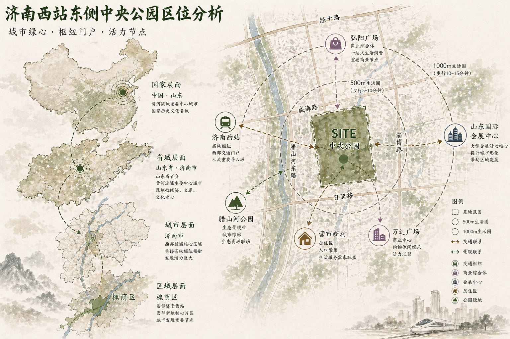
城市绿心 · 枢纽门户 · 活力节点——从国家、省域、城市到槐荫片区的四级区位解读，叠加 500m / 1000m 生活圈与周边济南西站、会展中心、腊山河公园等要素联系。
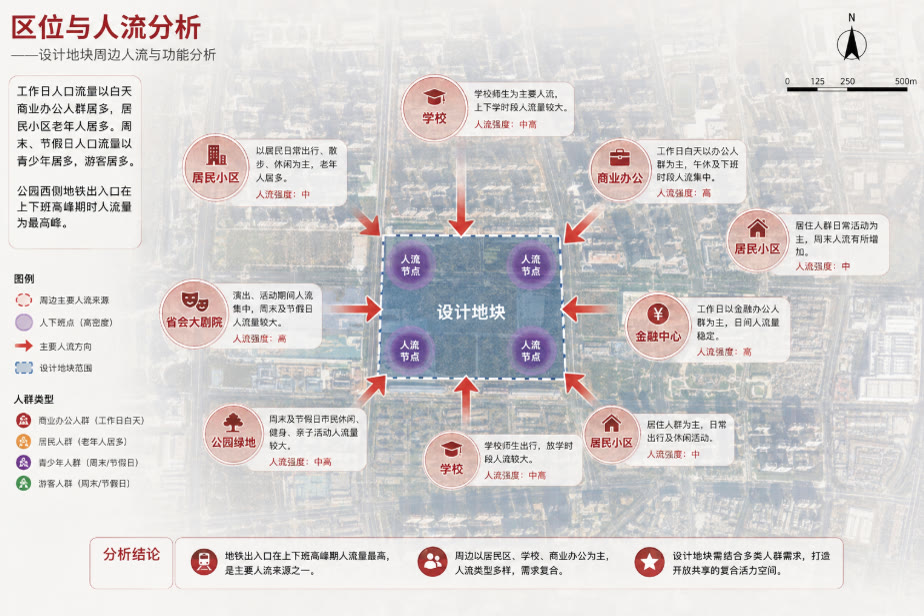
工作日以商业办公人群为主、居民区老年人群居多，周末节假日青年与游客聚集；西侧地铁出入口高峰人流最盛，是公园的主要导入源。
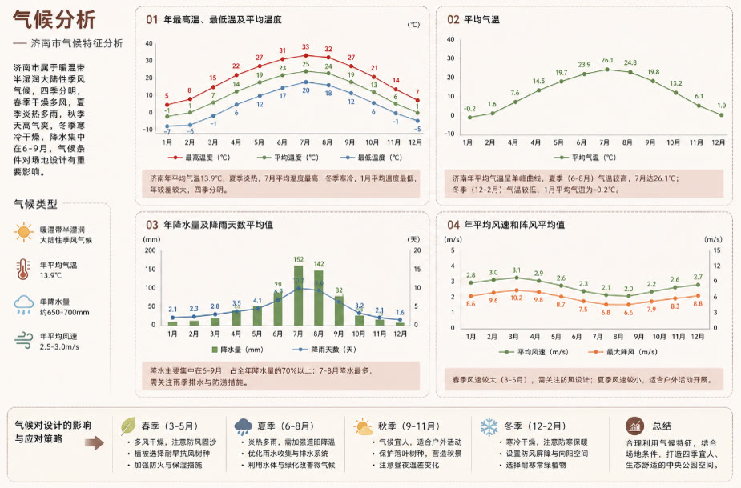
暖温带半湿润大陆性季风气候，年均气温 13.9°C，降水集中于 6–9 月，春季风速最大——防风固沙、雨季排水、夏季遮阳与冬季向阳空间成为设计应对要点。
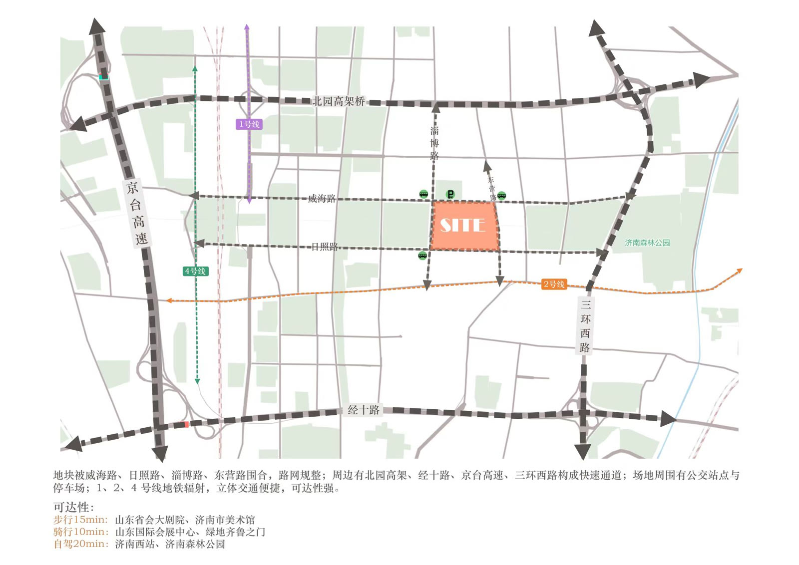
北园高架、经十路、京台高速与三环西路构成快速通道，1、2、4 号线地铁辐射，步行 15 分钟可达省会大剧院与市美术馆，立体交通便捷。
横轴迎宾 · 纵脉连通ONE AXIS, SPRING NETWORK
泉脉汇于西站枢纽，立足济南西站客流、地铁 TOD 与中央公园中轴布局，面向过境游客与市民双重人群，四大策略贯穿场地。
空间策略
以东西主路为迎宾中轴：西起地铁西站出入口泉源广场，经中部核心水景节点，抵达东侧城市休闲广场。西侧入口大面积铺装集散场地化解西站瞬时客流；中轴采用泉纹铺装、列植垂柳，以线性水景模拟泉溪。中轴中心做下沉旱喷浅泉水景，不深挖地基，适配地铁 50m 受限区。
文脉策略
提取趵突泉、明府城泉井与泉渠肌理，转译到地面铺装、景观景墙与座椅小品之中；全园布置多处微型泉涌旱景，打造泉城微型缩影，方便外地游客短时打卡、直观感受济南泉文化，契合西站门户的展示职能。
用地合规策略
地铁 50 米受限范围全域以大草坪、自然缓坡与浅溪软质景观为主，不设厚重构筑物与深挖基础；轨道与地铁出入口和公园无缝衔接，实现出站即入园，分流枢纽拥堵人流，达成交通与绿地一体化。
功能策略
旅客集散区服务中转旅客短时歇脚与行李寄存；泉景核心区承载游客打卡观光；休闲活动区供本地居民健身与亲子活动；生态涵养区以密林绿地降噪隔离西站车流，四区各得其所。
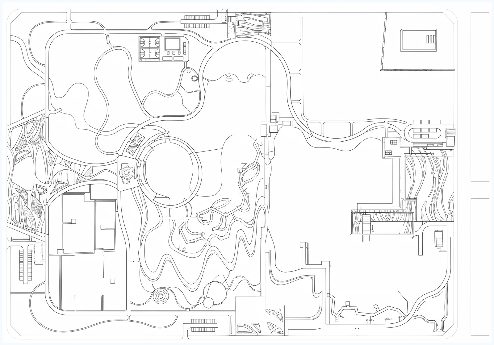
线稿推演：以环形园路串联全园，确立中央水面与圆形核心节点的骨架。
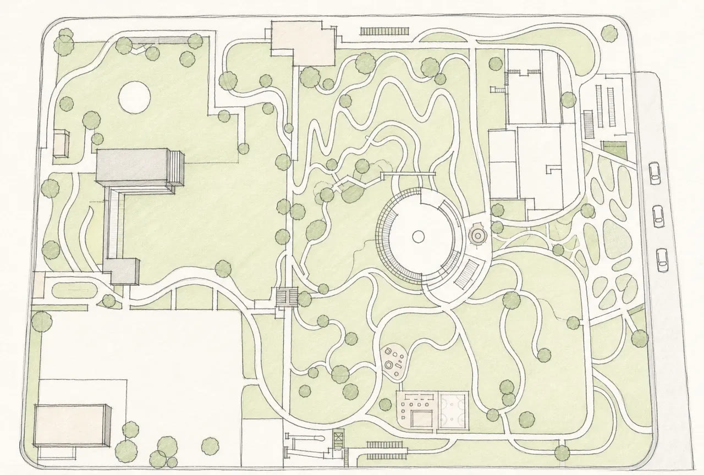
手绘深化：细化建筑组团、中心圆庭与环路动线，功能组团逐步落位。

中央泉湖与金莲雕塑构成全园焦点，环形剧场、木构廊架、湿地栈道与运动场地由蜿蜒的园路串联，周边密林围合出安静的城市绿心。


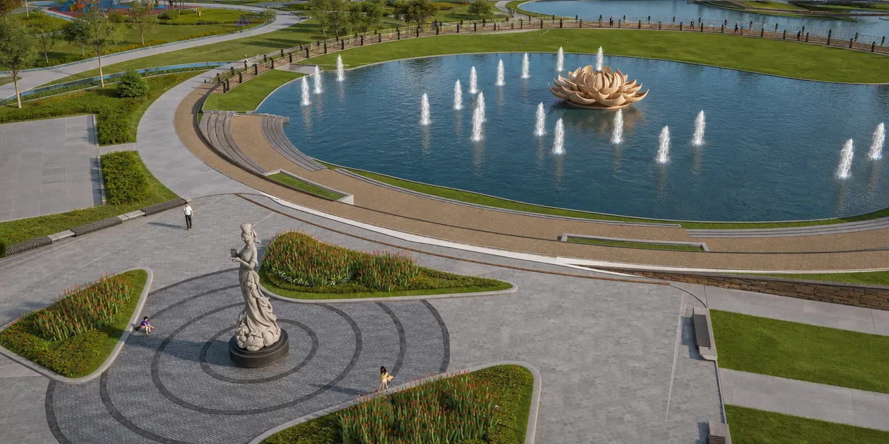
雕塑广场、弧形看台与湖面旱喷——泉景核心区的完整序列。
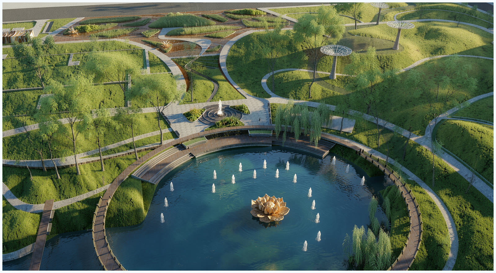
金莲雕塑立于泉湖中心，旱喷阵列环绕，是迎宾轴线的起点。
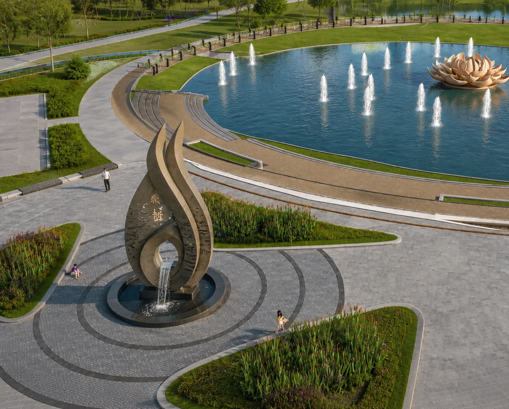
环形泉纹铺装环抱雕塑水景，花境岛屿点缀其间。
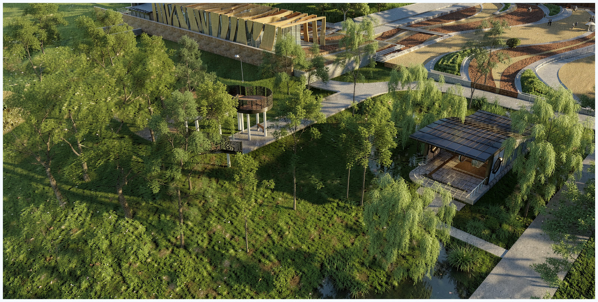
木构廊架、林间观景圆台与滨水凉亭，在绿荫间舒展。
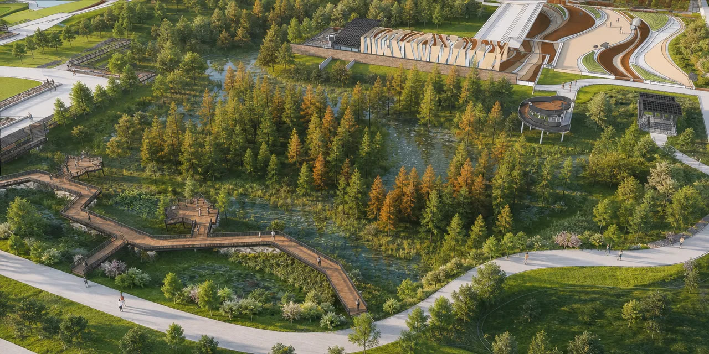
湿地水景与多边形观景平台，芦苇与花境共生的生态段落。
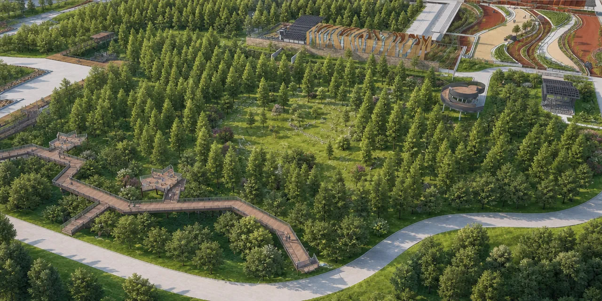
木质架空步道穿行于密林之上，连接观景平台与休憩节点。
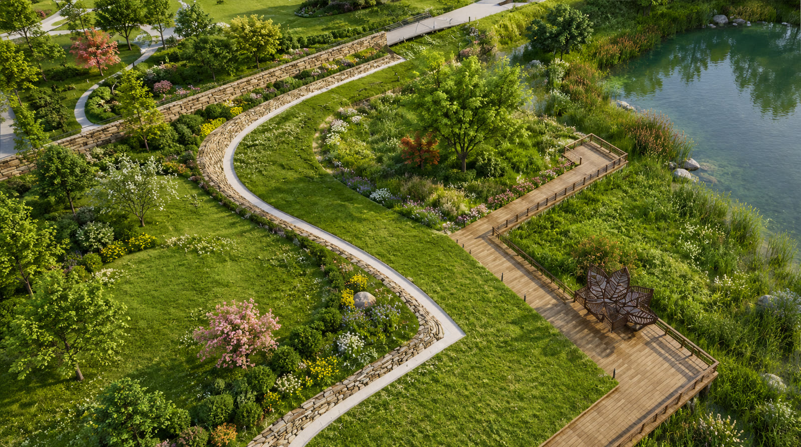
石墙花境、木质栈道与水面相接，静谧的滨水漫步段落。
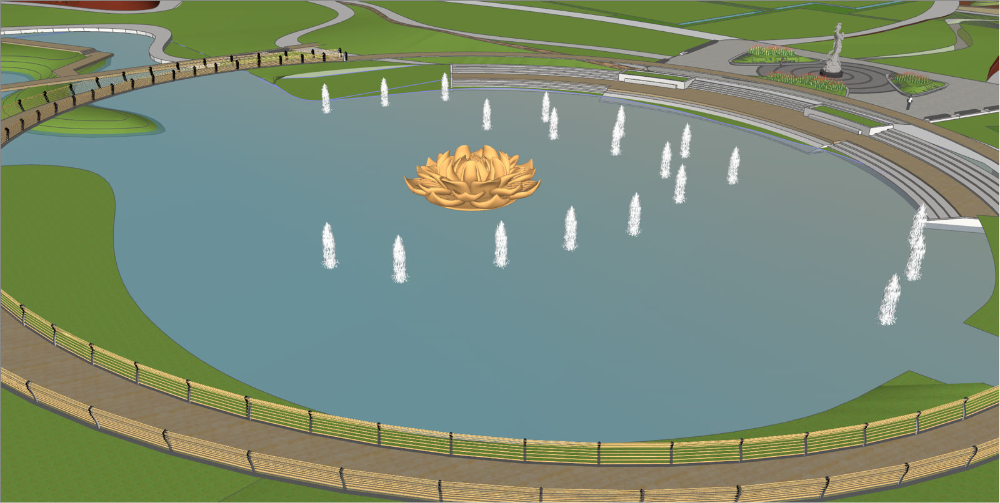
约二十组旱喷环绕金莲雕塑呈弧形阵列，构成全园最具识别度的画面。
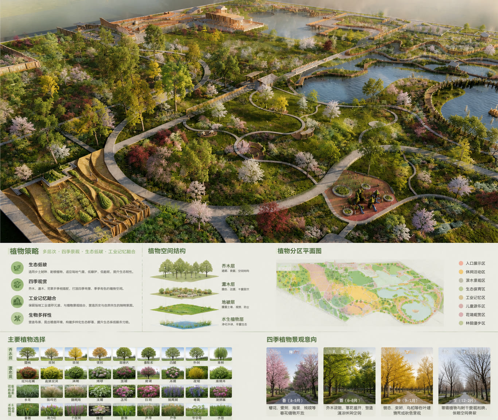
乔木、灌木、地被与水生植物四层共构植物空间；分区配置兼顾四季观赏与生物多样性，八大盘区从入口展示到林间漫步各有性格。